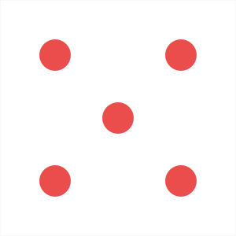

First to 100. Space rolls, H holds, N starts over.
A 1 busts the round. Double 6 wipes the bank. Hold to keep the round.

How this game works
Same table. Two warriors. No network.
Two different scores
The big red number is the bank. It stays until you win, or until a double 6 wipes it. The small number in the red box is the round. It is not safe until you hold.
A turn
The grey panel and the red dot mark whose turn it is. That warrior may roll as many times as they like, then hold. After a bust, a wipe, or a hold, the other warrior plays.
Roll
Both dice are rolled. Their faces are shown and added to the round. A 4 and a 5 add 9. The dice hide when the turn ends, so the next warrior starts clean.
A 1
If either die is a 1, the round is lost. The bank is untouched. The turn passes. One 1 is enough. The other die does not save you.
Double 6
If both dice are 6, the bank is set to 0 and the turn passes. The round is lost too. This is the old “two sixes” idea, finished for the two dice that were already on the page.
Hold
Hold adds the round to the bank, clears the round, and passes the turn. Holding on 0 does nothing. You have to roll first.
Winning
After a hold, if the bank is at least the winning score, that warrior wins. The name becomes Winner, the panel stays highlighted, and rolls and holds stop until New game.
Winning score box
Type a number, then press New game. It is read only then, so changing it mid-game cannot move the finish line. Blank or anything under 20 falls back to 100.
Keys
Space rolls. H holds. N starts a new game. Typing in the score box does not trigger those keys.
What the code does
app.js keeps the bank in scores, the round in roundScore, and whose turn it is in activePlayer (0 or 1). gamePlaying is false after a win so the buttons ignore clicks. init resets all of that. The pictures dice-1.png through dice-6.png are the faces. Full notes are in NOTES.md.